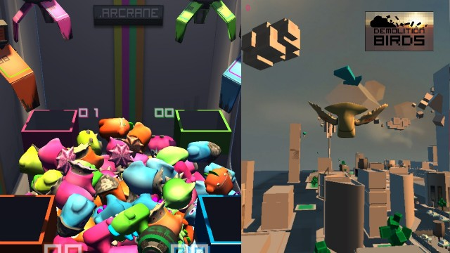
The Arcrane and Demolition Birds
This project was a collaboration between the University Utrecht and the HKU, for which I joined a team of 5 HKU students. The goal was for us to build a game from the ground up to delivery, and experience the whole process of game design. The HKU students were mainly designing the game and I was mainly assisting with technical contributions (i.e. problem solving and performance issues).
Our task was to produce multiple dadaistic games for Fourcelabs, a small game company who focuses on developing pervasive games. Our game design process came forth with fourteen prototypes, of which two were eventually chosen to be fully developed: the Arcrane and Demolition Birds. In the four months we were given to produce the games, we were able to create two games that had a dadaistic and absurdic feel to it. Fourcelabs was very satisfied with this result, especially with their experience of similar jobs for teams that weren’t able to completely finish one game.
Some media displaying the final result. Note that they are all in Dutch.
If you wish to read more about the game design process, scroll down to my Report on Game Design project.
Related links
Our employer: Fourcelabs
HKU students’ log website, containing more info on the design process: DaDa » Design for playful impact
Report on Game Design project

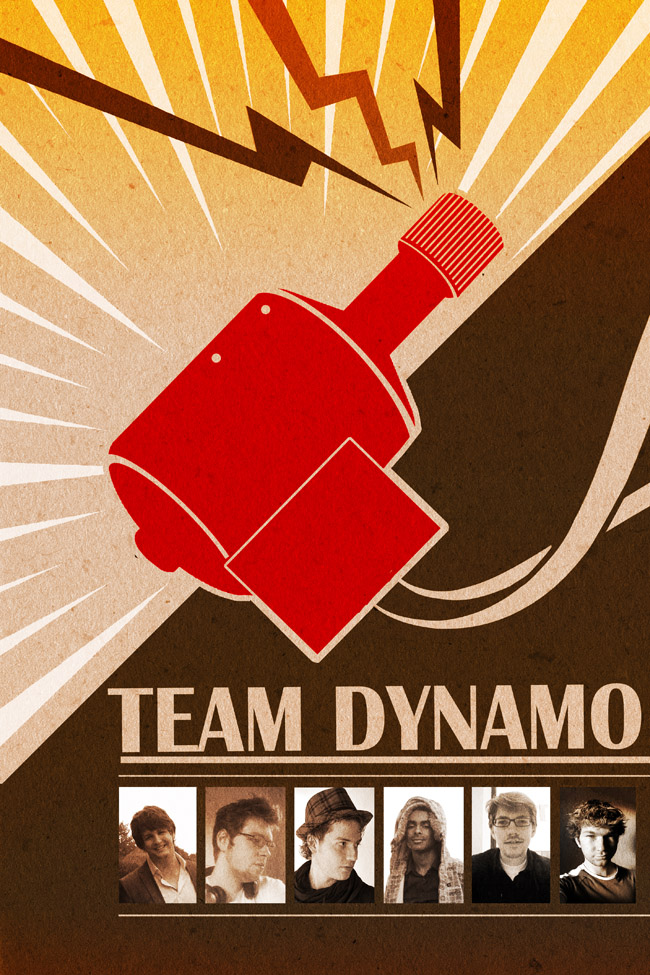
Team members (from left to right)
Bob Alberts
Arsene van de Bilt
Rick Jacobs
Daniël Joustra
Robin van Olst
Bob Gussenhoven
At September the 12th, a group of HKU students and I formed a game design team, which we called Team Dynamo. Our assignment was to produce games with a Dadaistic twist; when you expect something to happen, something else may happen instead, which is often the complete opposite. With this information, we thought of a total of 14 concepts. From these, we made prototypes of the most feasible ones. Four prototypes had potential of becoming a game, of which we chose two to actually make a game of.
Creating the prototypes and games was often a challenging task, requiring proper knowledge of physics and the game engine’s architecture (in our case Unity3D). In the next section, I shall highlight various technical contributions that I’ve done, in order to prove that I’ve been a beneficial asset to the team.
Technical contributions to prototypes
My noteworthy contributions are those related to programming three prototypes and one game.
Bobsleigh prototype

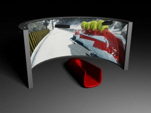
The concept of the installation.
The first prototype I started to develop was the bobsleigh. The concept was about multiple players sitting inside a physical bobsleigh, using their body weight to steer their virtual bobsleigh into the right corners. The bobsleigh itself would mostly be affected by the physics engine, with the intent to produce an accurate bobsleigh simulation.
I started off with creating a simple sliding block on an equally blocky track, for it was also my firs t experience in working with Unity3D. I tested out various shapes and sizes of the bobsleigh, to see how it affects the way the object acts in a physically simulated environment. In addition, I tested out various track sizes and the properties of the physics engine and the physics of the objects (in Unity3D: PhysicalMaterials). My main objective at the time was to get a good feel of how Unity3D worked, for during this time, my colleagues created a more realistic looking track and bobsleigh than the objects I created from geometric primitives. The new bobsleigh sled visually a lot more realistic through the smoothly curved track, though the physics didn’t exactly perform as expected.

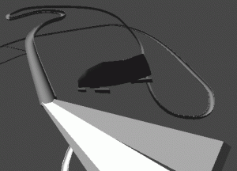
The new bobsleigh and track with ramp.
One of the issues with the bobsleigh was that it was sliding too much to the side. I was able to solve this by setting the friction of the skates to match that of a real skate: very low friction along the skate, but very high friction perpendicular of the skate. There were more issues, such as the bobsleigh toppling rather easily and the bobsleigh not rotating along the track, but the team leader decided that the time was best spent working on another prototype. Since the bobsleigh game never made it into an actual game, the prototype was never developed further.
Fishing Prototype
The fishing game was the second prototype I started development on. The concept wasn’t as worked out as other concepts; no Dadaistic traits were present and the gameplay was simply to fish up fish. There were some ideas about using computer hardware to throw at fish, causing certain effects on them depending on the piece of hardware, but the concept hasn’t been worked out up to that point.

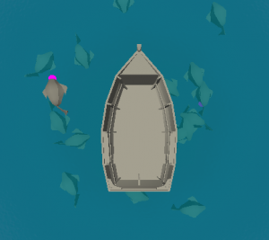
The pond with fish.
The prototype I created was pond with a boat in it. The fish were spawned at random points in the pond. To make it appear as if a fish is swimming, I picked a random target destination inside the pond’s perimeter and made the fish swim towards it. Upon reaching the destination, a new one is chosen. At certain intervals, a random fish was picked to bite the player’s bait. Baited fish could be reeled in by pressing up; a fully reeled in fish awarded a point, while letting go prematurely made you lose the fish.
The technically more interesting part would’ve been the turning of the fish when it is swimming, and to create a physically accurate representation of reeling in a fish. However, it was unsure if this concept was going to make the cut. Therefore it was decided that we would spend no more effort on this concept until we were sure, and I started working on yet another prototype. Later it was decided that this concept wasn’t interesting enough to be turned into a game.
Schracen Prototype
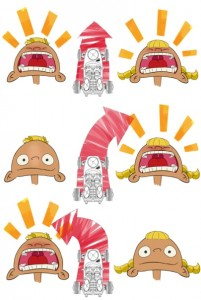

It was my job to create a prototype where a car could be steered in an environment. This would then later be connected to a steering based two input volumes. I familiarized myself with the car related physics of Unity3D. The construction of a car that is correctly physically simulated is rather complicated and it took me some time to fully understand it, but I was able to construct a simple car that can be driven around eventually. However, development on this concept stopped when we noticed that there was too much delay between screaming into a microphone and actually registering it. Another reason was feasibility, which also applied to the bobsleigh prototype: it requires building an interesting looking environment, which likely could not be finished in time
The work on the car was not lost however. I was able to reuse it for testing purposes for the bird game.
Technical contributions to the Bird game

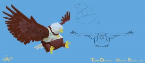
The obese bird.
The bird game changed a lot since its first concept. It started off as a single player game where the player would fly around a city. The objective was to fly as far as possible with the limited resources you had. The concept later slightly changed to the game being about an obese eagle being trapped on top of a corporate building. His energy is limited and upon spending it all, he gets a cardiac arrest and crashes down. The objective was to cause as much damage as possible when crashing into objects.
For this purpose, a destructible city was created. During testing, we noticed that the destroyed city with all kind of objects floating through the space was a rather trippy experience. This coincidental result, and the additional interaction of the bird with the objects, actually lined up with the desires of the employer concerning the feel of the game. From this experience we created a new concept: it would be a two-player game, where each player tags objects (including whole buildings) by colliding with them. Tagged objects get the tagging bird’s color, and get the ability to tag smaller objects by colliding with them.
The colliding of the bird with the objects and the objects with each other was one of my technical contributions.
Physics
Creation of city physics
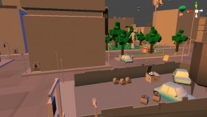

Since the city consisted of hundreds of objects, I decided to group them all under a single City object, and attach a script that would attach the FallApartScript to all of the objects. This allowed for further iterations of the city to be able to fall apart by attaching a single script to the City object, which handled all modifications on its own at startup.
Bird-object collisions and interactions
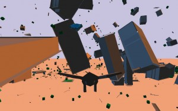

Optimalization
As the project progressed, the city that was being designed for the game expanded greatly. The last iterations of the game featured thousands of individual objects (such as car doors), with the final one containing over 2500 objects. When testing these versions it became apparent that when the larger part of the city was physically simulated, the physics engine had to perform so many calculations that it grinded to a halt, and that we could express the framerate in second per frame. We feared that Unity3D was unable to cope with our rich decorated world. However, I was able to recover a good framerate after applying two solutions.
Physics Layers

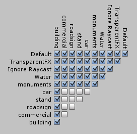
Unity’s physics layer matrix
The first solution was the use of physics layers. I wasn’t aware of this feature in Unity3D before this issue, but it solved the bulk of our framerate problems. Objects in the game can be assigned to a certain layer. The layer is useful for identification of the class of the object, but more importantly is also used for determining if objects belonging to a layer can physically interact with object of another layer. Combining all possibilities yields a Layer Collision Matrix, which is shown on the right. As can be seen there, some layers have their ‘can collide with’-box unticked. These layers contain objects that are tiny compared to the buildings that are present in the game, and therefore do not require accurate physical simulation. After turning off the collisions between these layers, the framerate rose to a reasonable level. However, it wasn’t sufficient to solve the issue; when nearly all objects were physically simulated, the player still experienced lag. Since the built-in profiler didn’t give good hints on what was holding down the framerate, I went searching for more solutions.
City object deparenting
This solution solved our framerate problems. Our finely created architecture uses empty objects to group other objects. This is a recommended procedure by the creators of Unity3D, since groups or folders to visually structure objects placed in the game do not exist. But this practice introduces a new problem: whenever a child object moves, its effect on the parent is calculated. What is kept track of I’m unsure, but there is some administration going on, even when the parent is an empty game object that is never affected by anything. And since this game can have various thousands of objects moving around, lots of useless recalculations are made every frame.
The actual solution was simple: we needed our City object to keep all objects grouped under, but after starting the game, it has become redundant. Using a small script at startup that calls an existing function called detachChildren() and then deleting the empty and childless City object, the framerate of the game has become excellent.
Using the above two solutions, the game is able to simulate 2500+ objects in real-time, while maintaining a high degree of realistic behavior. It was not necessary to reduce the amount of objects present in the city for the sake of framerate, which would have made the game a lot less interesting to play. I even reckon that the game would have failed to deliver if it would have been the case, because being able to create a great clutter of objects was a primary goal for this game.
Kinect issues
There was one issue that has kept bugging us during the entire production of the game, but never got around to fixing it: each time the game was shut down, the library used for reading the Kinect crashed. After the game got at the final stage and the rest of the team was polishing it up, I decided to try and solve this issue.
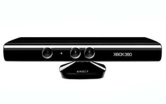

Conclusion
The bird game was successfully finished, and was renamed to Demolition Birds. The Arcrane, a four-player competitive crane game was also successfully produced by our team. Both games were presented to FourceLabs on Friday the 16th of November, 2011. The head of FourceLabs, who is experienced at being a client for HKU projects, commended the team on producing two working games that met quality requirements.
Personally, I found the experience of working with HKU students invaluable. Design is a completely different world in the universe of IT. Working together with designers learned me a lot about what is possible and how design materializes. I would never be able to do it myself, which is perhaps the reason why I value this experience so high.
For the team, I reckon I was useful as well. My technical knowledge allowed to team to make decisions and overcome problems that may have otherwise unnecessarily caused delays or lesser results.
The team itself was a joy to work in. The team members are kind and joyful people with a passion for what they do. I’m glad I was placed in this team to give my contributions, and would wholeheartedly recommend other master students to do their experimentation project in such a collaboration. The experience of working together with people with such different perspectives and skills is something you will definitely benefit from in future projects. For this reason, I brand it invaluable.